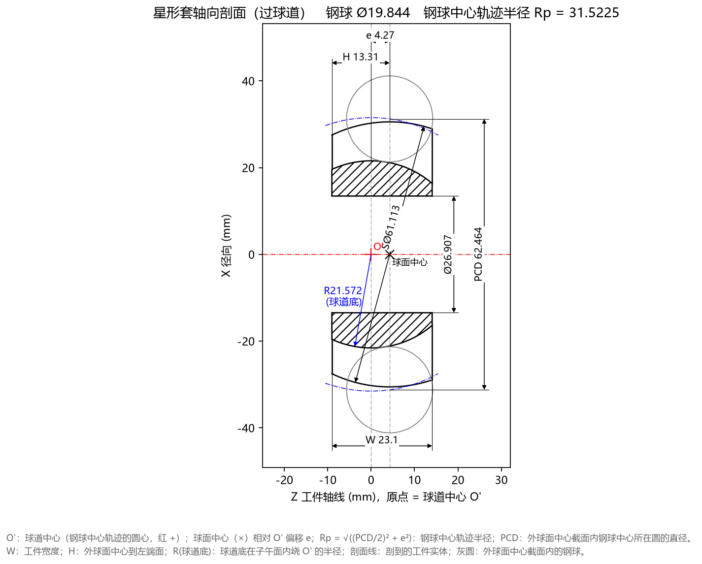

5.3 Tab 3：星形套轴向剖面 (Ctrl+3)
星形套轴向剖面 标签页展示沿着星形套零件回转中心轴线切开的轴向剖面图（过球道子午面），并自动在图面上引出全部核心车削毛坯与球道特征尺寸，底部还配有各项符号（O'、球面中心、Rp、PCD、W、H、R(球道底)）的灰字释义。它相当于一张实时生成的星形套工序核对工程图。

一、标题栏与坐标系基准定义
- 顶部标题栏：显示
星形套轴向剖面 (过球道) 钢球 Ø19.844 钢球中心轨迹半径 Rp = 31.5225。 - 横轴
Z 工件轴线 (mm)，原点 = 球道中心 O'：- 水平红色点划线
X = 0为星形套回转中心轴线； - 坐标原点
Z = 0（红色十字+ O'）：固定在球道中心 （即钢球中心轨迹圆弧的曲率中心）； - 外球面球心（黑色叉号
× 球面中心）：位于 处（当偏心距 时，位于原点右侧 处）。
- 水平红色点划线
- 纵轴
X 径向 (mm)：垂直于星形套回转轴线的径向半径坐标（上下对称绘制）。
二、图面几何元素与 8 项自动标注尺寸核对清单
在每次开始计算刀具前，强烈建议切换到 Tab 3：星形套截面，对照手中的客户星形套零件图纸逐一核对图上标出的尺寸与轮廓：
| 序号 | 图面标注 / 符号 | 对应参数或计算结果 | 工程核对要点 |
|---|---|---|---|
| 1 | W 23.1 |
高级参数 工件宽度 |
核对零件左右两端面之间的总轴向厚度 。 |
| 2 | H 13.31 |
高级参数 球心至端面 |
核对从左侧端面到外球面球心（× 球面中心）的轴向距离 。 |
| 3 | e 4.27 |
基本参数 球道偏心 e |
核对球道中心（红十字 O'）与外球面球心（黑叉号 球面中心）之间的轴向偏心距 。 |
| 4 | SØ61.113 |
高级参数 外球面直径 |
核对以 × 球面中心 为圆心的星形套外球面直径。 |
| 5 | Ø26.907 |
高级参数 内孔直径 |
核对中心内孔直径，并目视检查剖面线区域（球道底部与内孔壁之间的最小实体壁厚）是否充足。 |
| 6 | PCD 62.464 |
基本参数 节圆直径 PCD |
核对在 球面中心 基准平面（）处上下两颗灰色钢球中心的跨距。 |
| 7 | R21.572 (球道底) |
自动计算结果 | 蓝色箭头标示从球道中心 O' 到球道最深处底面轮廓的圆弧半径（可用于车间圆弧样板或三坐标抽检球道底径）。 |
| 8 | 蓝色点划线圆弧 | Rp = 31.5225 |
标示钢球中心沿着子午面运动的圆弧轨迹（以 O' 为圆心、半径为 ）。 |